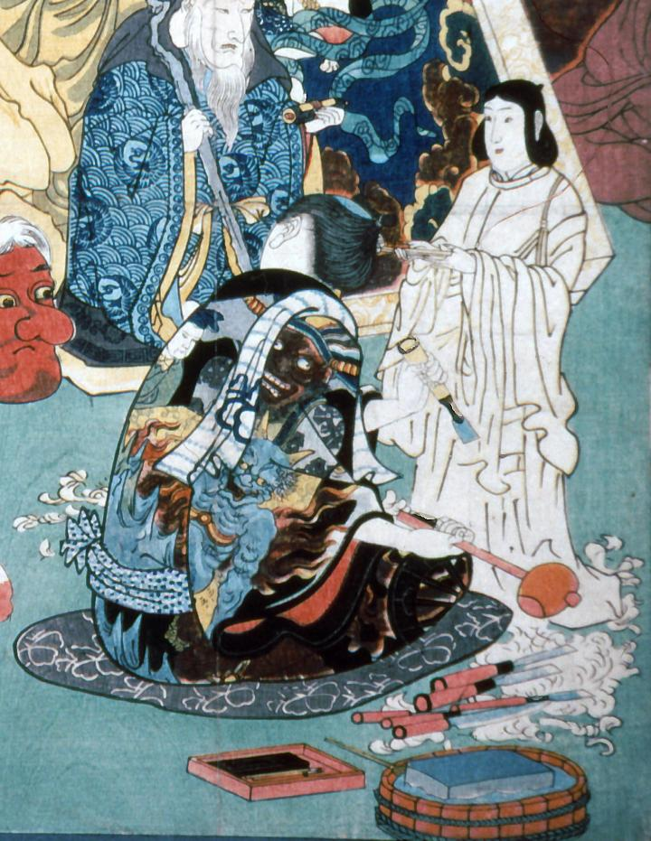

← 图鉴索引

左甚五郎の着物に描かれた、閻魔大王と青鬼。
著作者：歌川国芳／出典：親書誌：A5_pushkin_0031：名誉右に無敵左甚五郎；メイヨミギニムテキヒダリジンゴロウ／日付：2011／資源識別子：A5_pushkin_0031_0001_0000
Copyright (c)2010- International Research Center for Japanese Studies, Kyoto, Japan. All rights reserved.